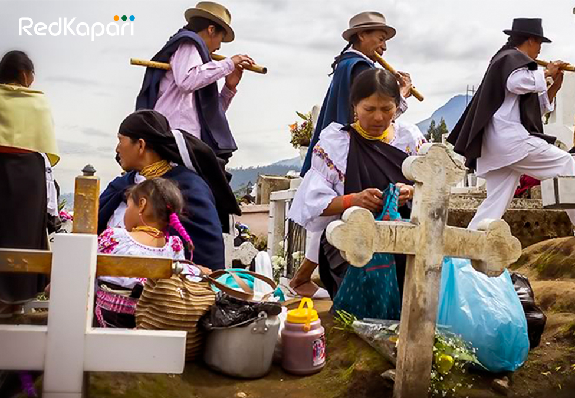
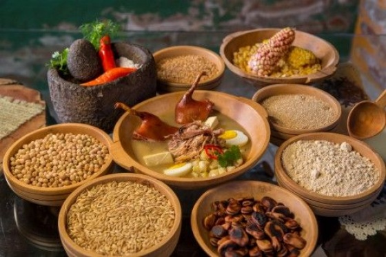

| |||

|
|
Bienvenidos conoceremos sobre las costumbres y tradiciones que tenemos en Otavalo Los Otavalo tienen una larga tradición comerciantes; antiguamente a los mercaderes se los denominaba "mindaláes", desarrollaban su actividad bajo el control cacical y estaban sujetos al pago de tributos en oro, mantas y chaquira de hueso blanco. Otra particularidad es la de ser tejedores En Otavalo ha existido siempre la cocina familiar del buen sabor y de pacienciosas particularidades basta mencionar las humitas (choclotandas), quimbolitos, las empanadas de morocho. Conservando costumbres heredadas de las tradicionales comidas andinas ricas en granos, morocho, quinua, chuchuca, choclo, arveja, etc.  | |